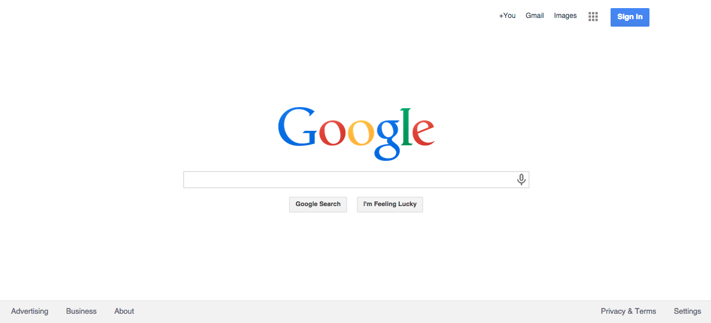
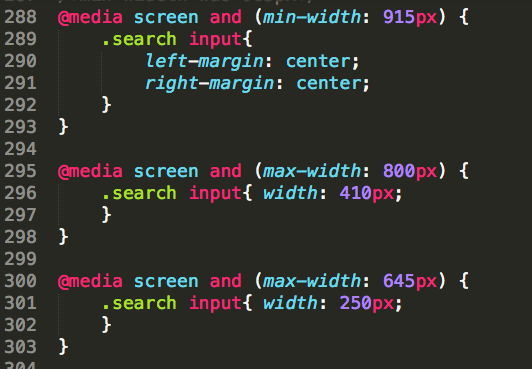

Chart Sampler
Chart Sampler
Final NYC+DA project - Google chart samples
This program lets you sample a number of chart types using Google Charts program.
Area, Bar, Step, Column, Line, Pie charts can be accessed when the first column of data is marked "string". The other type of charts can be seen when the data type select bar is marked "number".
Data can be uploaded via a Google Sheets URL.
Feel free to copy and paste the export code into your favorite text editor. Once that exported HTML code is uploaded to a browser, it will act as an interactive chart.
KEYBOARD SHORTCUTS:
ctrl + r = shortcut to refresh chart window
ctrl + p = shortcut to export chart to png image
 NYC+DA blog
NYC+DA blog
This Rails project was created with the help of fellow classmate Steven Ossorio.
He came up with the great idea of having control keys to help users quickly navigate the site.
Control + H takes you to the home page. Control + P takes you to your profile page.
To view a complete key listing, use Control + O.


The link provided here is running on Heroku.
One security feature of the site is that it is invite only. No matter what variation of a RESTful url that you would type in,
you will not be able to access any part of the site unless you are logged in.
To log in, please try email: zed@zed.com password zed. If for some reason that doesn't work, try email mia@mia.com password mia. That should allow you to see the rest of the site. Contents include the home page, where you can view blog posts. A community page for people having specific technical issues. A staff page which lists current teachers. And a student page, showing who is currently enrolled.
Google clone
This "Google Clone" project is an excercise in CSS positioning and website responsiveness. Using media queries, the length of search bar collapses at specific browser widths. (Some of the program's media query code is pictured here.)
All of the buttons, links and hover drop-shadows are generated by CSS. The only images are the microphone, the Google icon and the small grid (to the left of the sign in button).

